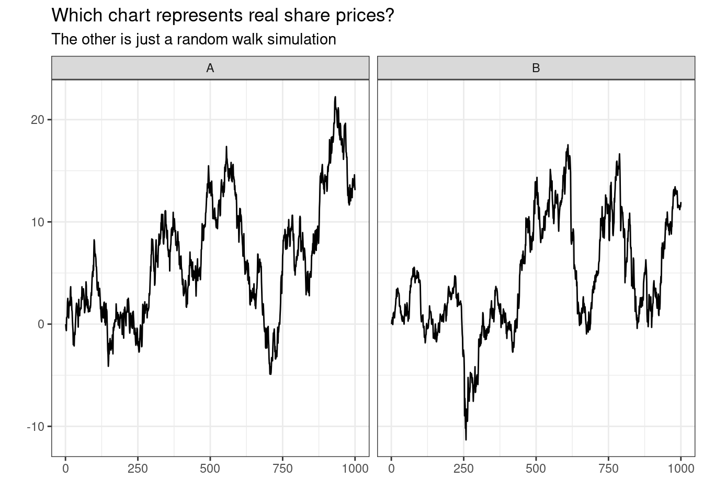
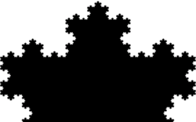

Earlier in my career, in the afternath of the GFC I worked as trader for an online share trading platform. Everyday I would get blasted with a firehose of emotion from investors. People day-trading on their accounts, needing help placing exotic trades or dealing during volatile markets.
It’s easy to get swept up in the excitement. Sweating on every tick of the market. Listening to the live market news and updates, trying to time it just right.
I had a holiday booked with my partner, so I took a couple of weeks off and didn’t look at the markets. When I returned, it was like I never left. Everyone was still on the same hamster wheel. The market had moved, but it was kind of the same.
Having formal mathematics training lent me some perspective. It reminded me of the famous fractal pattern popularised by Benoit Mandelbrot where certain geometric shapes look similar to themselves as you continually zoom in (a process known as self-similarity1).

It got me thinking, was this all just random noise. Was this all just a giant illusion based on psychology, sales targets and the need to fill column inches?
I recently completed Michael Kemp’s excellent book The Ulysses Contract: How to never worry about the share market again.2
Kemp breaks down common myths around ‘authority’ in financial markets and the tendancy for humans to fall prey to cognitive biases and essentially forgetting history when it comes to the markets. I agreed with nearly every word in the book. Although admitedly, I did blush at how my attitudes differed when I was a freshly minted finance graduate.
Author and interesting person Nassim Nicholas Taleb also writes about this in his 2001 classic Fooled by Randomness: The Hidden Role of Chance in Life and in the Markets.3. Despite his writing style being extrememly abrasive, the underlying points are compelling. Are we all blinded by randomness? Commentating, analysing and taking credit for what is essentially random noise happening to us?
A random market?
It got me thinking, could the average punter tell the difference between the stock market and random noise?
To test this, I simulated a type of data called a ‘random walk’. A random walk is a type of mathematical, time-series model. It describes a process of sequential observations (say, daily share prices). Each day’s share price is simulated by taking yesterday’s price and just adding randomly generated ‘noise’. It doesn’t try to emulate the shape or style of share market. It’s really dumb. It just takes the price one day and either adds or subtracts a small random amount (of normally distributed noise).
The funny thing about this model is it often contains4:
- long periods of apparent trends up or down
- sudden and unpredictable changes in direction.
Sound like the share market anyone??
This can be written as:
\[ y_t = y_{t-1} + e_t \] Really, this is just a special case of a class of time-series models called ARIMA models. In particular it is an Autoregressive model, that is, a model that is formed from linear combination of previous values.
\[ y_t = c + \phi_1 y_{t-1} + \phi_2 y_{t-2} + ... + \phi_p y_{t-p} + e_t \] Where we set just one term \(\phi_1 = 1\), \(c = 0\) and specify \(e_t \sim N(0, s)\)
The Test
I have simulated 1000 values of a random walk (AR(1)) model and placed this next to 1000 recent observations of a randomly selected Australian stock’s daily closing price.
Can you tell which is which?
So are the markets actually random?
I don’t really know. In the short term, it does look random. In the long term, the Australian share market has continued to exhibit long term growth. This doesn’t mean its dynamics aren’t driven my a random walk, after all these models can incorporate drift.
There is even a formal theory in finance called the Random Walk hypothesis5 in which some financial heavyweights have argued that stock prices evolve based on a random walk process and are thus - unpredictable.
Randomness is very tricky - the implication here isn’t that the markets are meaningless or the underlying dynamics are random or that you cant make money.
Rather, we can think of stock prices being modelled well by a random walk process. So what you can do about a process that is modelled well by a random walk?
You can start by calling bullshit on attempts to explain or predict short term price fluctuations. Even if they sound confident and wear a suit.